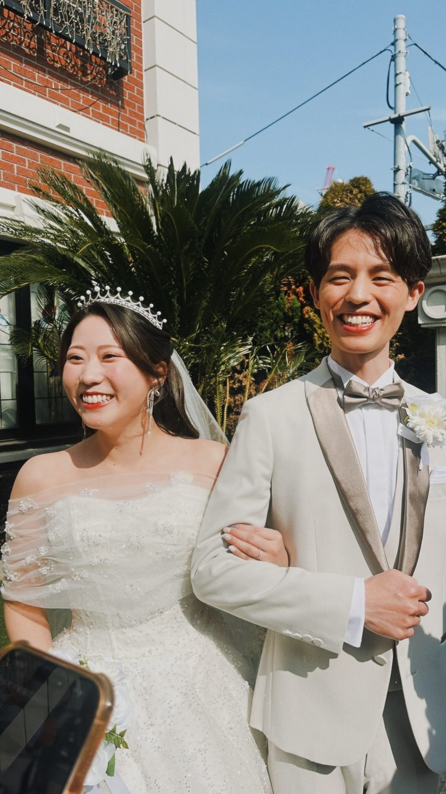
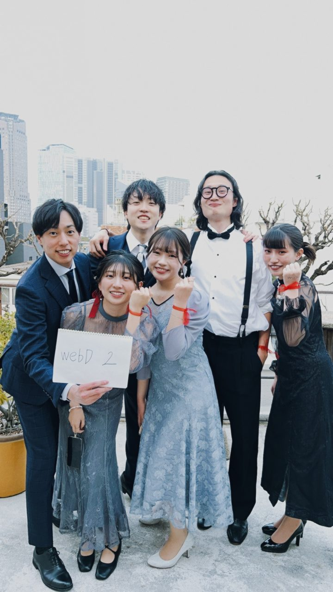
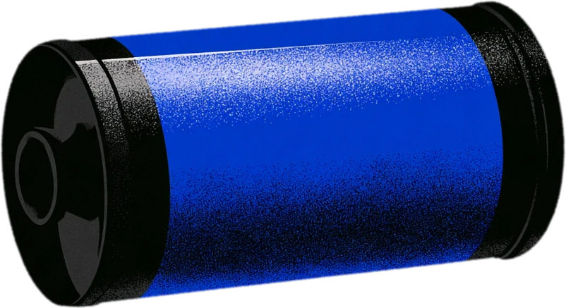
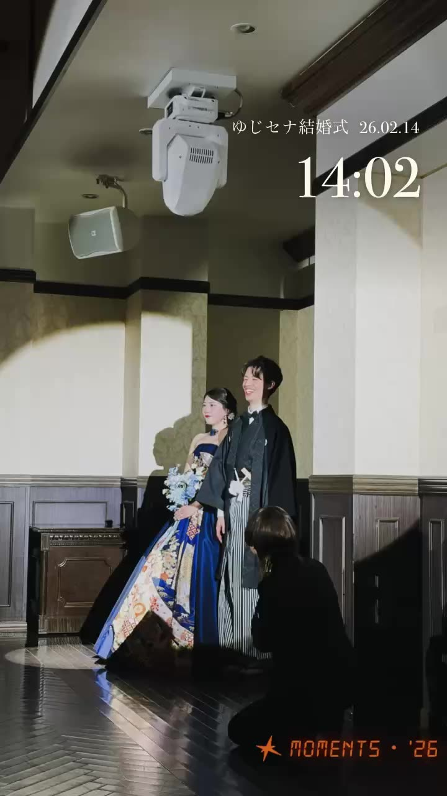

9:41

28
アクティブ - 8/15 20:00まで
Martin & Naady’s Wedding Party
振り返り動画
アップロード
テンプレート
全て保存

自分の写真
Turning guests’ photos
into a movie…

Martin & Naady’s
Wedding Party
Date
2026-2-14
Shots
402
Guests
28
Create a film
動画を見る
保存
シェア
Story
